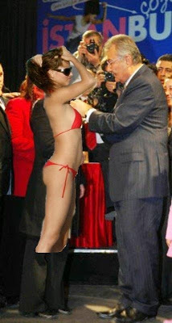

Baykal'dan mayo acilimi
CHP'nin tüm Türkiye'yi kucaklayan bir parti olduğunu söyleyen Baykal, son günlerdeki açılımlarına devam ediyor. En son rozet taktiği CHP'lilere bir mayolu delegeyi ekleyen Baykal şöyle konuştu: "Artık CHP'nin ayırımcı olmadığını herkes anlamıştır sanıyorum. Gördüğünüz gibi iki senede bir muhakkak bir açılım yapıyoruz".Baykal bu sefer rozet takmak için bir top model seçti, fakat rozeti iliştirecek yer bulamayınca şunları söylediği ısıtıldı: "Merak etme kızım ben sana sonra takarım ". Bu sırada CHP üyelerinin "inadına çıplak!" şeklinde slogan attıkları gözlendi. Rozet törenini anahtar deliğinden izleyen Onur Öymen mutlu olduğunu belirtti. "Halkımızla birleşiyoruz" yorumunu yaptı.Cep telefonundan garip sesler gelen Önder Sav'a yorum için erişilemedi.
